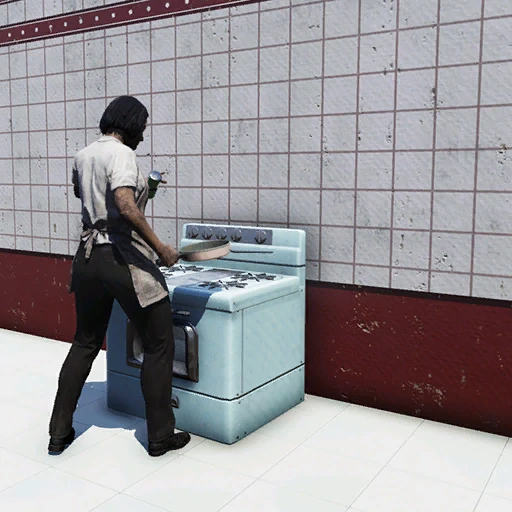
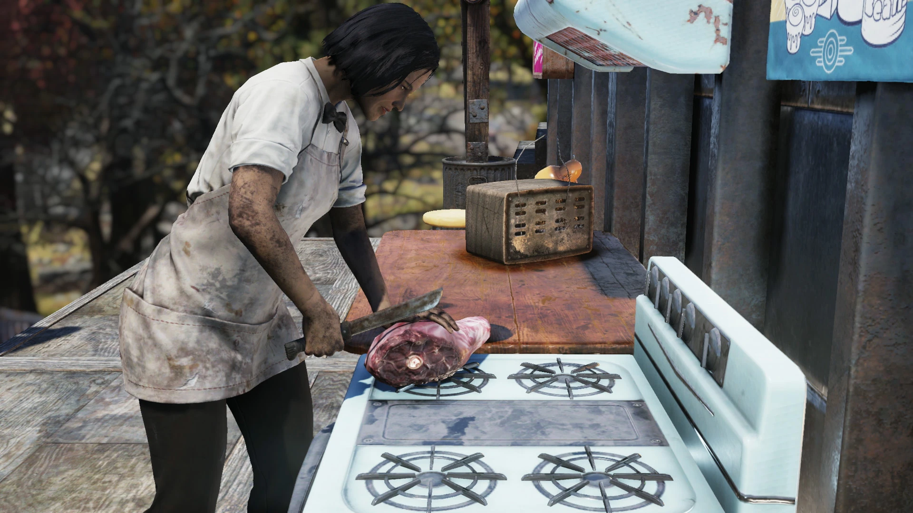

Yasmin Chowdhury
ヤスミン・チョウドリー — アパラチアを旅するシェフ
— ヤスミン・チョウドリー
概要
ヤスミン・チョウドリーは、アパラチアで出会える同居人（C.A.M.P.アライ）兼行商人である。
シーズン3「The Scribe of Avalon」のランク25報酬として解放され、その後Night of the Mothアップデートでゴールドブリオンでサミュエルから購入可能な設計図も追加された。
背景
ヤスミンは核戦争前のフィラデルフィアで生まれ育った。料理学校に進むまでずっとフィラデルフィアを離れたことがなく、自分のレストランを開くことが夢だった。
シェフを目指したのは、両親へのちょっとした反抗だったという。両親は二人とも学者で、ヤスミンにも同じ道を歩んでほしがっていたが、料理への興味が一時的なものではないと分かると理解してくれた。
料理への情熱の原点は、祖母と一緒に姉妹の誕生日のために「サンデーシュ」というベンガル菓子を作った体験にある。形やトッピングを自分で選ぶところから始まり、それ以来祖母がキッチンに立つたびヤスミンも一緒だった。
大戦後、ヤスミンはポコノ山脈の古いリゾートの廃墟に集落を築いた生存者グループに加わった。彼女のキッチンは町の中心であり、長い一日の後に温かい食事と仲間の会話を求めて人々が集まる場所だった。15年間平和に暮らしていたが、レイダーの襲撃で町は破壊され、殺されなかった者たちは散り散りになった。
ヤスミンはレシピノートだけを持って脱出し、アパラチアを目指した。旅の途中で出会った人々から、デルバート・ウィンターズのようなアパラチアの料理人たちの話を聞いたことが、彼女をこの地へ導いた。ありえないことだと分かっていても、いつか両親や姉妹と再会できることをまだ心のどこかで願い続けている。
それ以来、ヤスミンは各地を巡る旅のシェフとなり、情熱的にレシピを収集している。立ち寄る先々で地元の人と物語やレシピを交換し、料理を教えている。戦前は自分のレストランを開きたかったが、アパラチアに来てからは料理学校を開く方がいいと考えるようになった。かつては簡単に手に入ったレシピが、戦後の世界では失われたり忘れ去られたりしているからだ。
2103年頃にはアパラチアに定着しており、プレイヤーのC.A.M.P.に興味を持って滞在を申し出ることがある。地元のレシピを完成させるためで、様々な料理やごちそうを誰でも楽しめるよう提供してくれる。
アパラチアで最初に出会った人物の一人はハンターの女性で、ヤスミンは彼女から動物の足跡の見分け方を教わり、代わりに捕まえた獲物で立派な食事を作る方法を教えた。以来、アパラチアの動物の狩り、解体、調理にまで知識を広げている。
ヤスミンはヘルヴェティアにも訪れたことがあり、ファスナハトのことを聞くとぜひまた行きたいと意気込む。同様にミートウィークの話にも目を輝かせ、巨大な野外料理会への参加と「グリルマスター」（グラム）の秘密を教えてもらいたがる。
プレイヤーとのインタラクション
- 不死属性: あり
- 同居人: ヤスミンのクッキングストーブを設置可能
- 行商人: 各種アイテム（所持キャップ: 1,400）
- 特殊効果: 空腹メーターを完全回復する食事を定期的に作ってくれる
その他のインタラクション
会話で珍しい食材について尋ねることができる。スコーチビーストのミックスミートシチューを渡すと、サバイバルシリンジを受け取れる（1回限り）。
所持品
- 服装: グリルマスターの服
- 武器: オートマチックパイプピストル（15%の確率でフラグ手榴弾またはモロトフカクテル）
- その他: 15%の確率でスティムパック
トリビア
- 同居人に選ぶと、定期的に空腹メーターを完全回復する食事を作ってくれる
- C.A.M.P.に滞在中、研究資金を稼ぐためにレシピを売っている
- ゲーム内で煎じたブラック・ブラッドリーフティーを入手できる唯一の手段がヤスミンからの購入。このアイテムはクラフトできない
名言集
登場作品
ヤスミン・チョウドリーはFallout 76のSteel Dawnアップデートに登場する。
ギャラリー


ヤスミンはC.A.M.P.アライの中でも地味だけど、バックストーリーがしっかりしてて好きなキャラクター。
祖母と一緒にサンデーシュを作った思い出が料理人生の原点っていうのが良い。戦後のウェイストランドで「料理学校を開きたい」って発想になるあたり、ただの生存者じゃなくて文化の継承者としての意志が見える。
15年間築いた集落をレイダーに壊されて、レシピノートだけ持って逃げたっていう過去がまた重い。「次の集落に行けば仲間が見つかるかも」って歩き続けてるのは、希望を捨てない強さなのか、諦められない弱さなのか。
料理を通じて人と繋がろうとする姿勢が、ポストアポカリプスの世界にちょっとした温かみを与えてくれる存在ですね。
This article was created by translating and editing Yasmin Chowdhury from Nukapedia: The Fallout Wiki.
Licensed under the Creative Commons Attribution-Share Alike License (CC BY-SA 3.0).
© Overseer Mohi's Terminal — Fallout Lore Archive
コミュニティ維持のため、寄付を受け付けております。
> COMMENTS